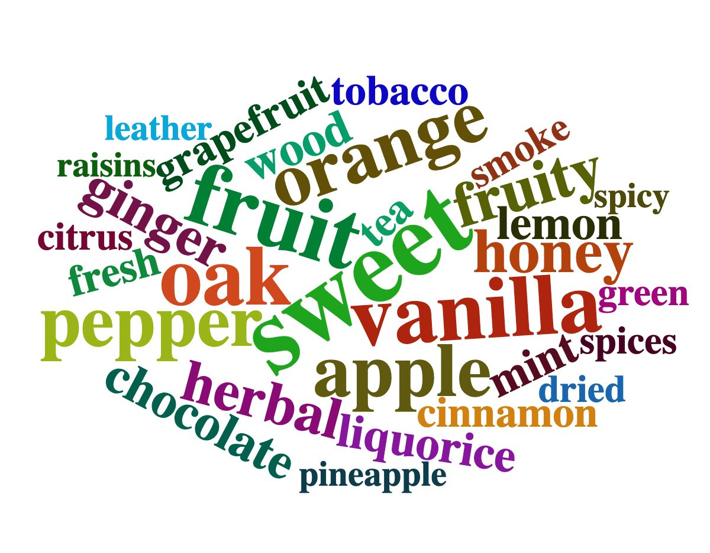
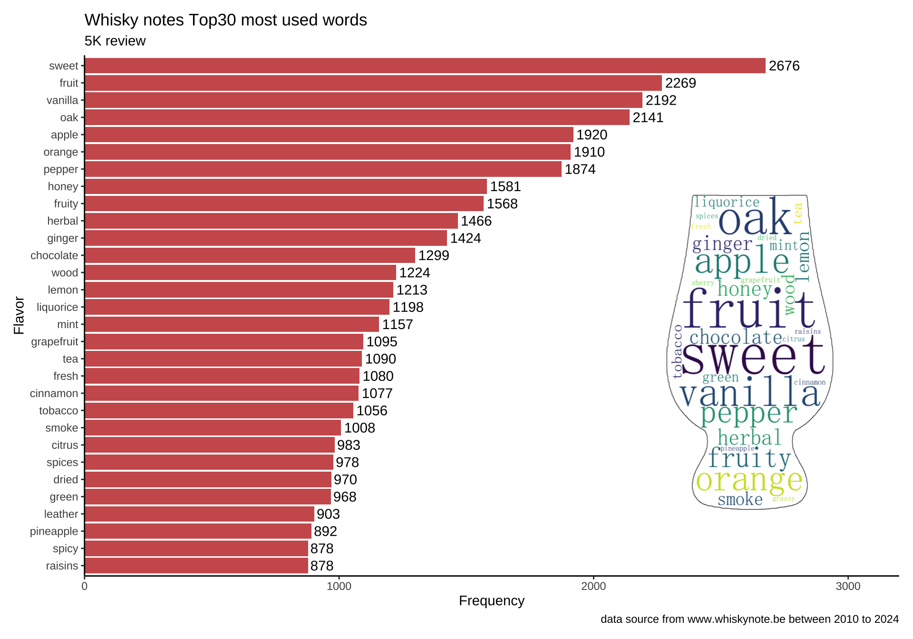

Code
#must install the package from github
#install.packages('devtools')
#devtools::install_github("lchiffon/wordcloud2") with whiskynote.be data
#must install the package from github
#install.packages('devtools')
#devtools::install_github("lchiffon/wordcloud2") library(tidyverse)
library(openxlsx)
library(readxl)data001=read_excel('./output/all_page_bottle_list_all.xlsx')
glimpse(data001)Rows: 4,934
Columns: 9
$ bottle_name <chr> "Cognac Chollet Lot 1960 ‘Le Bon Vivant’ – Fins B…
$ bottle_review_Nose <chr> "Nose: a rich, fragrant and fruity style. Honeyed…
$ bottle_review_Mouth <chr> "Mouth: more spices now. Mint and pepper, leading…
$ bottle_review_Finish <chr> "Finish: medium to long, more on fruit tea now, a…
$ all_page_score <chr> "0", "0", "0", "0", "0", "0", "0", "85", "82", "8…
$ page_class <chr> "* Cognac", "* Cognac", "* Cognac", "Ledaig", "Le…
$ page_published_date <chr> "30 November 2020", "30 November 2020", "30 Novem…
$ page_title <chr> "Cognac Lot 1960 / XO / Lot 1906 (Malternative Be…
$ review_url <chr> "https://www.whiskynotes.be/2020/cognac/cognac-lo…data002=data001 %>% filter(as.numeric(all_page_score)>0,as.numeric(all_page_score)<100
,bottle_review_Nose !='no comment'
,bottle_review_Mouth !='no comment'
,bottle_review_Finish !='no comment'
) %>%
mutate(review=paste(bottle_review_Nose,bottle_review_Mouth,bottle_review_Finish) %>%
str_to_lower() %>% str_replace_all("[[:punct:]]", "") %>%
str_replace_all('sweetness','sweet') %>% str_replace_all('apples','apple')%>% str_replace_all('oranges','orange') %>% str_replace_all('fruits','fruit')
)
reivew002=data002$reviewtest='able stees a asdf df able' %>%str_split(" ") %>% unlist %>% unique %>% paste(collapse = ' ')
test[1] "able stees a asdf df"reivew003=c()
for (i in reivew002){
a=i%>%str_split(" ") %>% unlist %>% unique%>% paste(collapse = ' ')
reivew003=c(reivew003,a)
}test001=reivew003 %>% tibble() %>% rename('review'='.')test002_without_sweet=test001[!grepl("sweet",test001$review),]
test002_sweet=test001[grepl("sweet",test001$review),]string <- reivew003
data002=data.frame(string) %>%
separate_rows(string) %>%
count(string, sort = TRUE) %>%
filter(n >= 2)library(tidytext)
data003 <- data002 %>%
anti_join(stop_words, by= c("string" = "word"))data004 <- data003 %>% filter(!string %in% c('notes','hints'
,'nose'
,'finish'
,'light', 'slightly', 'hint', 'nice'
,'medium' , 'subtle', 'background','note' ,'plenty' ,'lots'
,'mouth','bit','soft','dark')
)data005=head(data004,30)library(gtranslate)
#lang_codes
data005_cn=translate(data005$string, from = "en", to = "zh-CN")data005_cn=cbind(data005_cn,data005)
data005_cn=data005_cn %>% select(-string)library(wordcloud2) my_graph_en=wordcloud2(data=data005, size=1)
#my_graph_enlibrary(webshot2)
library(htmlwidgets)
saveWidget(my_graph_en,"tmp_en.html")#先保存为网页格式
webshot("tmp_en.html", "wordcloud_en.jpg", delay = 2) ##IRIENI
library(showtext)
showtext_auto()
par(family="PingFangSC-Regular")
my_graph=wordcloud2(data=data005_cn,size=1)
#my_graphlibrary(webshot2)
library(htmlwidgets)
saveWidget(my_graph,"tmp.html")#先保存为网页格式
webshot("tmp.html", "wordcloud.jpg", delay = 2) ##IRIENIlibrary(ggplot2)
ggplot(data005, aes(x=reorder(string,n), y=n)) +geom_text(aes(label = n), hjust = -0.1)+ ylim(min=0, 3200)+
geom_bar(stat="identity")+coord_flip()
library(ggplot2)
library(png)
library(grid)
library(patchwork)
img2 <- readPNG("en_glass.png")
img3=rasterGrob(img2, width = unit(1,"npc"), height = unit(1,"npc"))
gg=ggplot(data005, aes(x=reorder(string,n), y=n))+theme_classic()+geom_text(aes(label = n), hjust = -0.1)+xlab("Flavor") + ylab("Frequency")+scale_y_continuous(expand=c(0,0),limits=c(0,3200))+
geom_bar(stat="identity",fill="#CD5C5C")+coord_flip()+ggtitle("Whisky notes Top30 most used words",subtitle = "5K review")+labs(caption = "data source from www.whiskynote.be between 2010 to 2024")+
inset_element(img3, 0.66, 0.15, 1, 0.75,align_to = 'full')gg
# Add logo to the graph you created
library(magick)
logo <- image_read("logo.png")library(ggplot2)
library(png)
library(grid)
library(patchwork)
library(showtext)
showtext_auto()
img2 <- readPNG("cn_glass.png")
img3=rasterGrob(img2, width = unit(1,"npc"), height = unit(1,"npc"))
gg=ggplot(data005_cn, aes(x=reorder(data005_cn,n), y=n))+theme_classic()+geom_text(aes(label = n), hjust = -0.1)+xlab("风味") + ylab("次数")+scale_y_continuous(expand=c(0,0),limits=c(0,3200))+
geom_bar(stat="identity",fill="#CD5C5C")+coord_flip()+ggtitle("Whisky notes Top30 风味词",subtitle = "5K+ 酒评")+labs(caption = "数据源:www.whiskynote.be 从2010年到2024年")+
inset_element(img3, 0.65, 0.15, 1, 0.75,align_to = 'full')gg
grid::grid.raster(logo, x = 0.05, y = 0.01, just = c('left', 'bottom'), width = unit(2.5, 'inches'))ggsave("myplot.png")sessionInfo()R version 4.4.1 (2024-06-14)
Platform: aarch64-apple-darwin20
Running under: macOS 15.1
Matrix products: default
BLAS: /Library/Frameworks/R.framework/Versions/4.4-arm64/Resources/lib/libRblas.0.dylib
LAPACK: /Library/Frameworks/R.framework/Versions/4.4-arm64/Resources/lib/libRlapack.dylib; LAPACK version 3.12.0
locale:
[1] en_US.UTF-8/en_US.UTF-8/en_US.UTF-8/C/en_US.UTF-8/en_US.UTF-8
time zone: Asia/Shanghai
tzcode source: internal
attached base packages:
[1] grid stats graphics grDevices utils datasets methods
[8] base
other attached packages:
[1] magick_2.8.5 patchwork_1.3.0 png_0.1-8 showtext_0.9-7
[5] showtextdb_3.0 sysfonts_0.8.9 htmlwidgets_1.6.4 webshot2_0.1.1
[9] wordcloud2_0.2.1 gtranslate_0.0.1 tidytext_0.4.2 readxl_1.4.3
[13] openxlsx_4.2.7.1 lubridate_1.9.4 forcats_1.0.0 stringr_1.5.1
[17] dplyr_1.1.4 purrr_1.0.2 readr_2.1.5 tidyr_1.3.1
[21] tibble_3.2.1 ggplot2_3.5.1 tidyverse_2.0.0
loaded via a namespace (and not attached):
[1] gtable_0.3.6 xfun_0.48 websocket_1.4.2 processx_3.8.4
[5] lattice_0.22-6 tzdb_0.4.0 vctrs_0.6.5 tools_4.4.1
[9] ps_1.8.1 generics_0.1.3 curl_6.2.0 janeaustenr_1.0.0
[13] pkgconfig_2.0.3 tokenizers_0.3.0 Matrix_1.7-0 lifecycle_1.0.4
[17] farver_2.1.2 compiler_4.4.1 textshaping_0.4.0 munsell_0.5.1
[21] chromote_0.4.0 SnowballC_0.7.1 htmltools_0.5.8.1 yaml_2.3.10
[25] pillar_1.10.1 later_1.3.2 tidyselect_1.2.1 rvest_1.0.4
[29] zip_2.3.1 digest_0.6.37 stringi_1.8.4 labeling_0.4.3
[33] fastmap_1.2.0 colorspace_2.1-1 cli_3.6.4 magrittr_2.0.3
[37] withr_3.0.2 scales_1.3.0 promises_1.3.0 timechange_0.3.0
[41] rmarkdown_2.28 httr_1.4.7 cellranger_1.1.0 ragg_1.3.3
[45] hms_1.1.3 evaluate_1.0.1 knitr_1.48 rlang_1.1.5
[49] Rcpp_1.0.13-1 glue_1.8.0 xml2_1.3.6 rstudioapi_0.17.1
[53] jsonlite_1.8.9 R6_2.6.1 systemfonts_1.1.0https://github.com/Lchiffon/wordcloud2